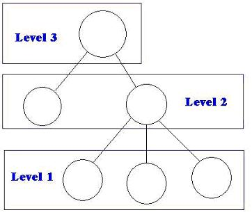
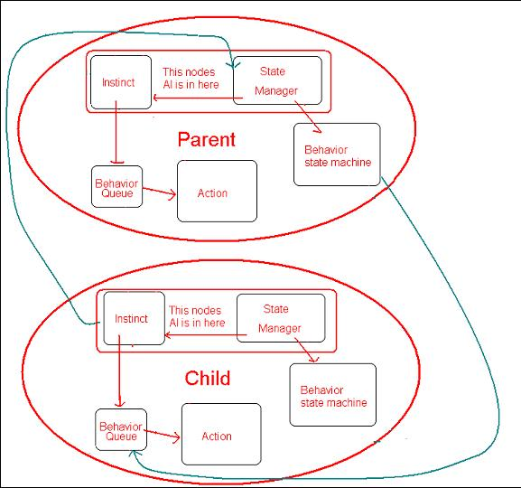

In order to make the game interesting and provide the player with challenging decisions, our AI engine must be an integral part of the design. As pointed out in the initial design doc we should start with an initial design where enemy units just move about randomly and develop a suitable AI later. Therefore allowing for an iterative design process, but a design that allows for a pluggable AI architecture.
Anything you don't know you can look up at the AI dictionary, I try not to use acronyms so everything is pretty straightforward. Here is where the AI dictionary can be found online: AI dictionary
The AI system is a hierarchical structure designed as an n-arry tree. Where the nodes are for each unit. The idea behind this started with the idea that each node would have a set of behaviors that it could perform and that some of those behaviors would be to notify the level above that something was happening. Then the level above could react to this new information and either tell the level below to perform different behaviors or notify the level above of what is going on or both. This seemed like a good idea till I talked to Kevin and Ben and I realized how hard it was going to be to handle the communication between nodes, and that there was going to have to be a lot of extra information shared between levels that wasn't necessary. But here is what it would have looked like had I went with this design:
 Fig. 1 The way we are NOT doing the AI.Then I relalized that I would need to be much more specific in this design or it would fall apart for lack of understanding. So I came up with the real design and that is what follows.
The AI system is an n-array tree of nodes. Each node in the system contains 3 identifying pieces of information. These are: 1) The number of sub-nodes it can have 2) Who its parent node is. 3) What its name is. The AI part of each node: Each node has 5 AI components: 1) Instinct component - which is how the unit reacts to his surroundings - an example would be: if I see an enemy, then run away. 2) Behavior component - which is a list of behaviors that nodes directly below him can perform. This is actually kept in a state machine which allows us to control units efficiently. It also allows us the easiest way I can think of to swap out the state machine for genetic algorithms controlled by a neural network in a future revision - something I really want to be able to do. 3) Action Component - This is the action being performed at any given moment. These are calls to the unit's methods like shoot and run. 4) Behavior Queue - a priority queue which receives input from the parent node's behavior component and the Instinct component, the Action component will always receive the next command in the queue and if the next command is at a higher priority it will immediately switch and start performing the new command. 5) State Manager - this receives input from a child node's Instinct component telling him that the child is doing something new/unexpected. The State manager then does two things, he sends the instinct component a message (which potentially updates his parent node of a change) and he reupdates the state machine with a new behavior structure (which sends behavior commands to the child's Behavior queue.
A graph here would be nice to think about all these relationships huh...well aren't you lucky - here is an example of a 2 node system.
Fig. 2. This is an example of a two node system. The arrows designate information sharring, so action receives info from Behavior Queue, and behavior queue receives info from instinct as well as the parent nodes Behavior State Machine. The Behavior State Machine receives info from the State Manager. And the State Manager receives information from the child's Instinct component.
As you can see in fig. 2 the instinct and State manager components control the AI node the rest is management overhead for the AI system to work smoothly. The green arrows designate where the communication takes place between nodes.
This design is great because it allows us to abstract away (for the most part) behaviors from how the system deals with them. Therefore we must supply a base class behavior which can be publicly inherited from to create new behaviors. We also allow for instinct behaviors to be added to the system. Since these are essentially a special type of behavior that have the highest priority. Because behaviors are not known by the system the user of the system must also configure the behavior manager. Let's review the AI system sets up a framework for a developer to add behaviors, instincts, and state transitions between behaviors.In our first iteration of the game we would like the ability to have guys walk around randomly. So for the first prototype we need the AI engine to be done and we need 1 instinct behavior - random walk. This also requires that the game have enemy units.
1. AI Engine 1.1. AISystem - object that manages the n-array tree of Ainodes
1.2. AINode - object container described above. 1.2.1. Behavior state machine 1.2.1.1. Implement the state machine 1.2.1.2. Communication interface - handles the delivery of info to the behavior queue. 1.2.2. State Manager 1.2.2.1. Controlling interface - control of state machine. 1.2.2.2. Editing interface - developer methods for altering the decision making of the state machine 1.2.2.3. Communication interface - handles the information received from the instinct module. 1.2.3. Instinct module 1.2.3.1. Editing interface - developer methods for adding new instinct behavior responses 1.2.3.2. Controlling AI - methods to deal with checking for each instinct in the system and reacting 1.2.4. Behavior queue 1.2.4.1. Implement our priority queue 1.2.4.2. Communication interface - handles information sent from the other modules. (Like push and pop but transparent of how the info is being handled.) 1.2.5. Action module 1.2.5.1. Receive commands from the behavior queue. 1.2.5.2. Have the unit perform them 2. Behaviors 2.1. Create a random walk behavior for units 2.2. Create a pathfinding behavior 3. Additional behaviors 3.1. Whatever we want 3.2. How hard do we want this game to be
I have no pseudocode in the document and I apologize for that, you will be able to monitor the development of our ai engine in cvs though. Finally, please be highly critical of this AIsystem as well as of my code, Rip into me if you don't think something will work, that is the only way that I will get better and that we will have good ai in this game (and hopefully in games to come). And in conclusion I would just like to say how much I hate Microsoft word and all the auto format crap that they force you to follow - it makes it virtually impossible to create a custom document.